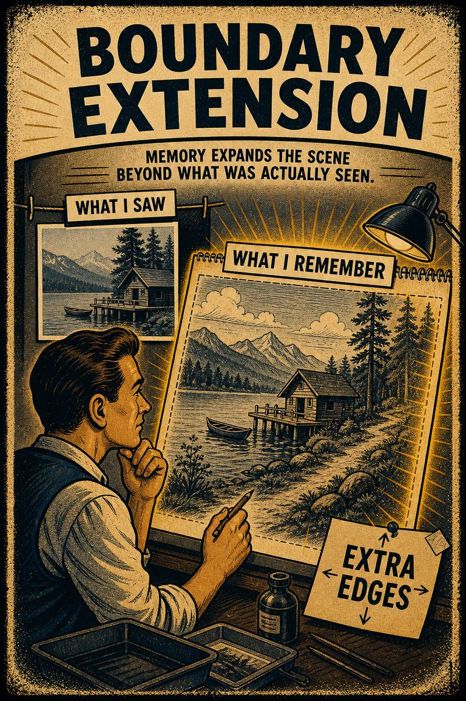
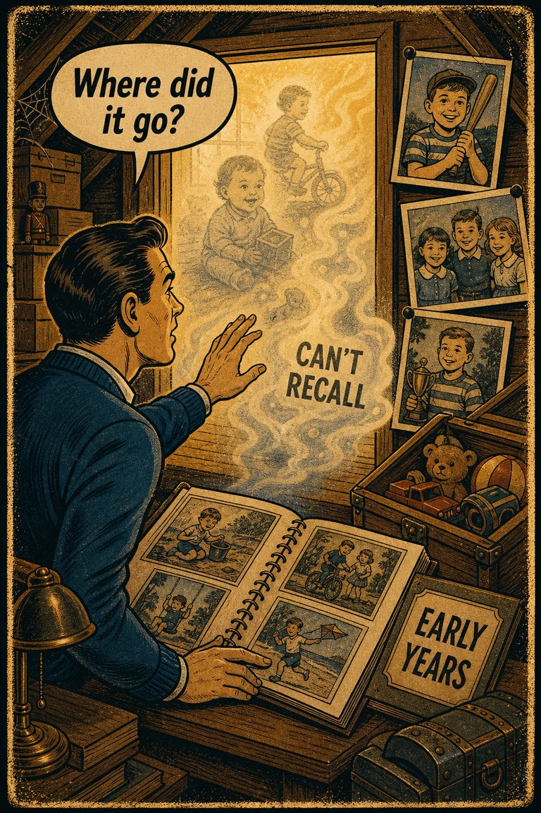
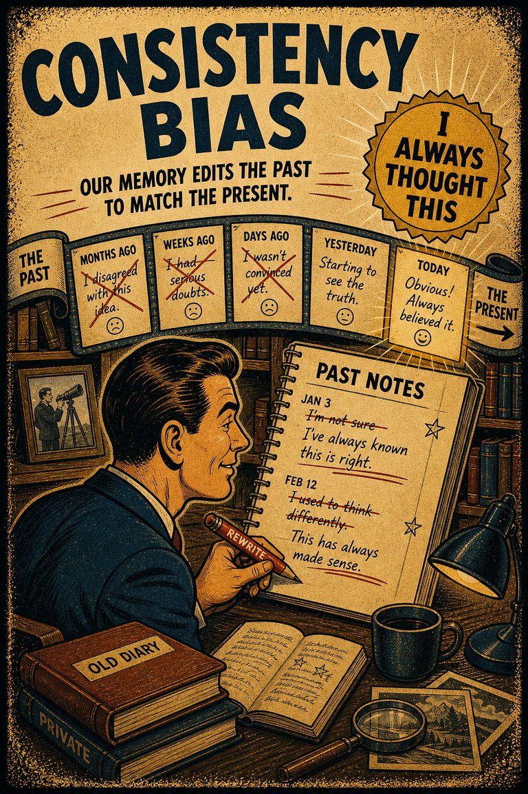
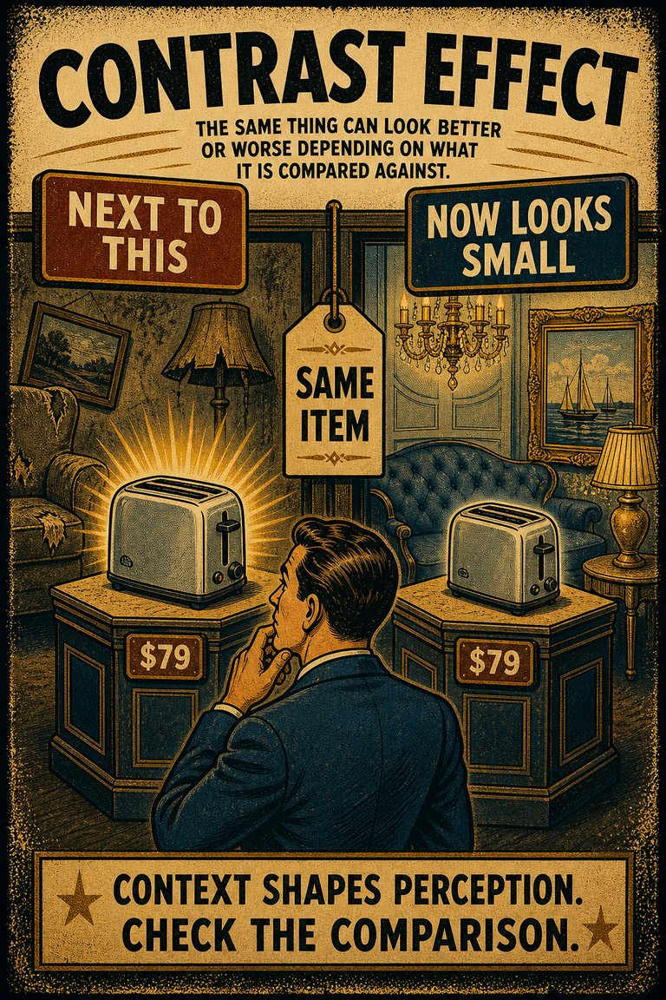
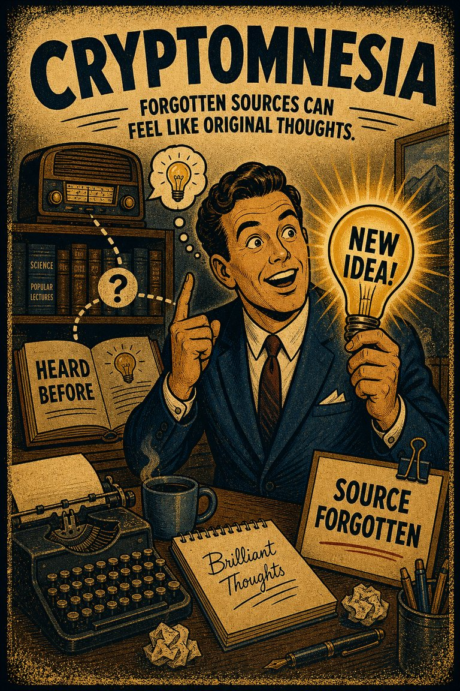
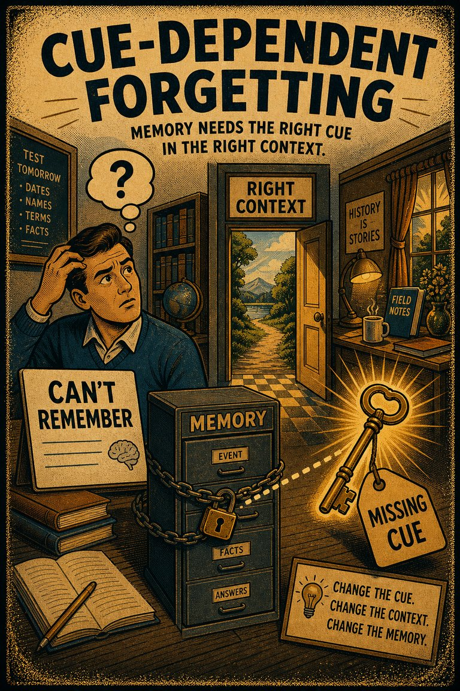

Everyday life
In everyday life, this often looks like people leaning on the easiest first interpretation when situations where recall is already difficult and the association cue feels easier to trust than a fuller review..

Cognitive Biases
A practical cognitive-bias site with clear definitions, learning paths, assessments, self-audits, and debiasing tools.
Cognitive Bias
The tendency to remember humorous material more easily than plain material.
What it distorts
Biases that selectively reshape memory, retrieval, and retrospective interpretation.
Typical trigger
Situations where recall is already difficult and the association cue feels easier to trust than a fuller review.
First countermove
Start with the recall question instead of the first intuitive answer, then check whether the association pattern is doing invisible work.
Best use
Quick reference
Are we remembering the original event, or a later reconstruction that now feels cleaner than reality?
In recall problems, the mind overweights resemblance, vividness, proximity, or intuitive linkage before a fuller check catches up.
Use the quick check and reflection questions before locking the label. Nearby entries often share the same outer appearance while differing in what actually drives the distortion.
Each example changes the surface context while keeping the same hidden distortion in place.
In everyday life, this often looks like people leaning on the easiest first interpretation when situations where recall is already difficult and the association cue feels easier to trust than a fuller review..
At work, this often appears when teams treat the first coherent story as sufficient instead of slowing the process long enough to compare alternatives.
In public discourse, it often surfaces when commentators move too quickly from salience to conclusion while the underlying evidence remains thinner than it sounds.
The distortion usually feels like ordinary good judgment from the inside, which is why procedural repairs matter more than mere recognition.
Teaching note: Start with the recall problem, then show how the association pattern makes the distortion feel natural from the inside.
The strongest debiasing moves change the process, not just the label.
Start with the recall question instead of the first intuitive answer, then check whether the association pattern is doing invisible work.
Ask someone else to restate the case from a genuinely different starting point before committing.
Change the workflow so this distortion becomes harder to repeat by default next time.
Practice And Repair
Follow the moment where the bias first becomes attractive, then track how that attraction turns into a distorted judgment before jumping straight to the label.
Situations where recall is already difficult and the association cue feels easier to trust than a fuller review.
The first coherent reading starts to feel like ordinary good judgment from the inside.
Biases that selectively reshape memory, retrieval, and retrospective interpretation.
Start with the recall question instead of the first intuitive answer, then check whether the association pattern is doing invisible work.
Are we remembering the original event, or a later reconstruction that now feels cleaner than reality?
Spot It
Slow It
Reframe It
These are nearby labels that can share the same outer appearance while differing in what actually drives the distortion. Use the overlap, the distinction, and the diagnostic question together before settling the call.
Why compare it: A nearby label worth comparing before settling the diagnosis.
Why compare it: A nearby label worth comparing before settling the diagnosis.
Why compare it: A nearby label worth comparing before settling the diagnosis.
These are useful when the label seems roughly right but the process change still feels underspecified.
Are we remembering the original event, or a later reconstruction that now feels cleaner than reality?
What feels connected here mainly because it is salient, familiar, or easy to pair mentally?
What evidence or comparison would most seriously change the current call?
These entries are usually taught most clearly through controlled demonstrations rather than through broad public case studies. The point is to show the memory pattern cleanly before it gets buried in narrative noise.
Participants study material with comparable content, except that one set is made humorous and the other is neutral. The humorous material is often remembered better later.
Why it matters: Humor changes encoding and distinctiveness, not just enjoyment.
When one item in a set carries surprise, amusement, or comic incongruity, it tends to become more retrievable than nearby plain items.
Why it matters: The demonstration helps explain why emotional vividness can improve recall without necessarily improving judgment.
These neighbors were selected from shared categories, shared patterns, and explicit editorial links where available.

The tendency to remember a scene as having included more surrounding space than was actually shown.

The retention of few memories from before the age of four.

The tendency to remember past attitudes or behavior as more consistent with the present than they really were.

The enhancement or reduction of a certain stimulus's perception when compared with a recently observed, contrasting object.

The tendency to mistake an old memory or borrowed idea for a new original thought.

The tendency for recall to weaken when the original context or cues are missing.